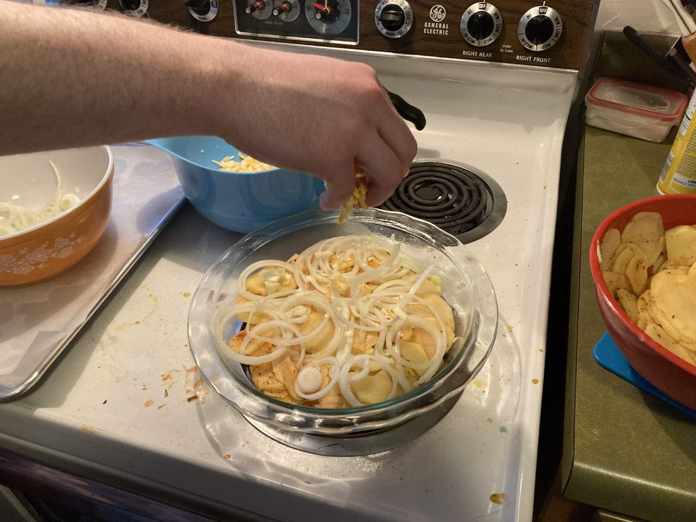
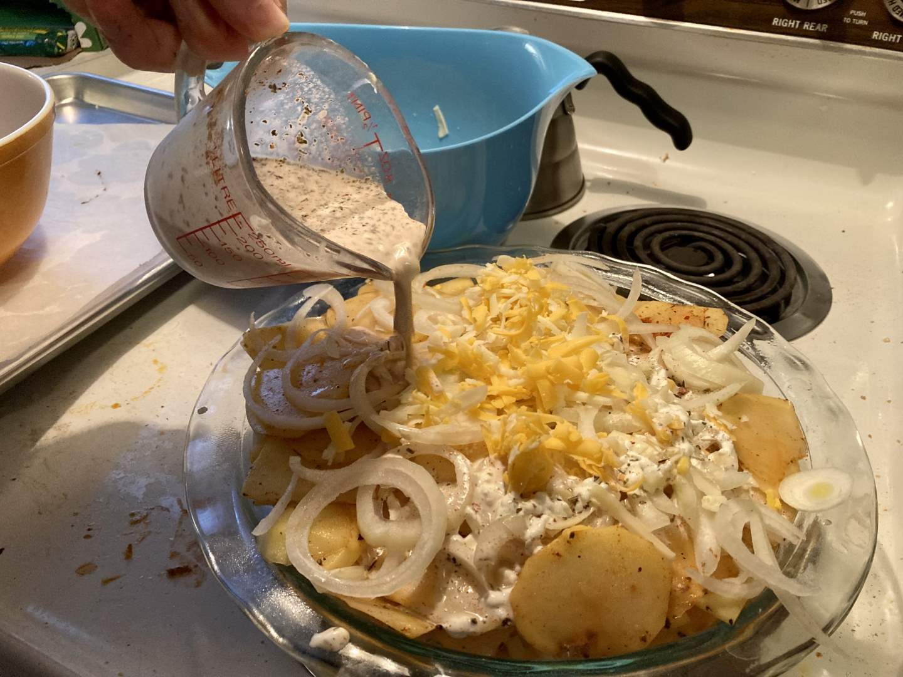
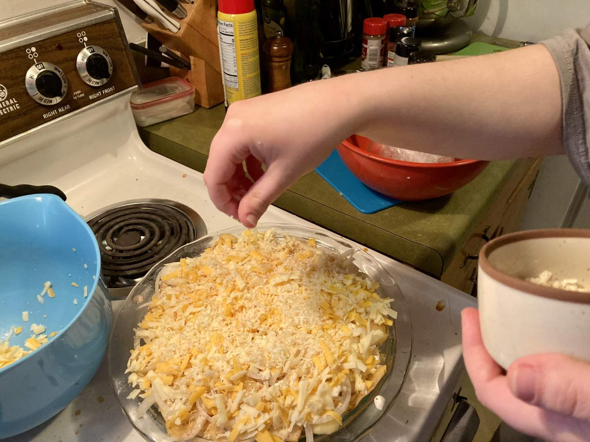
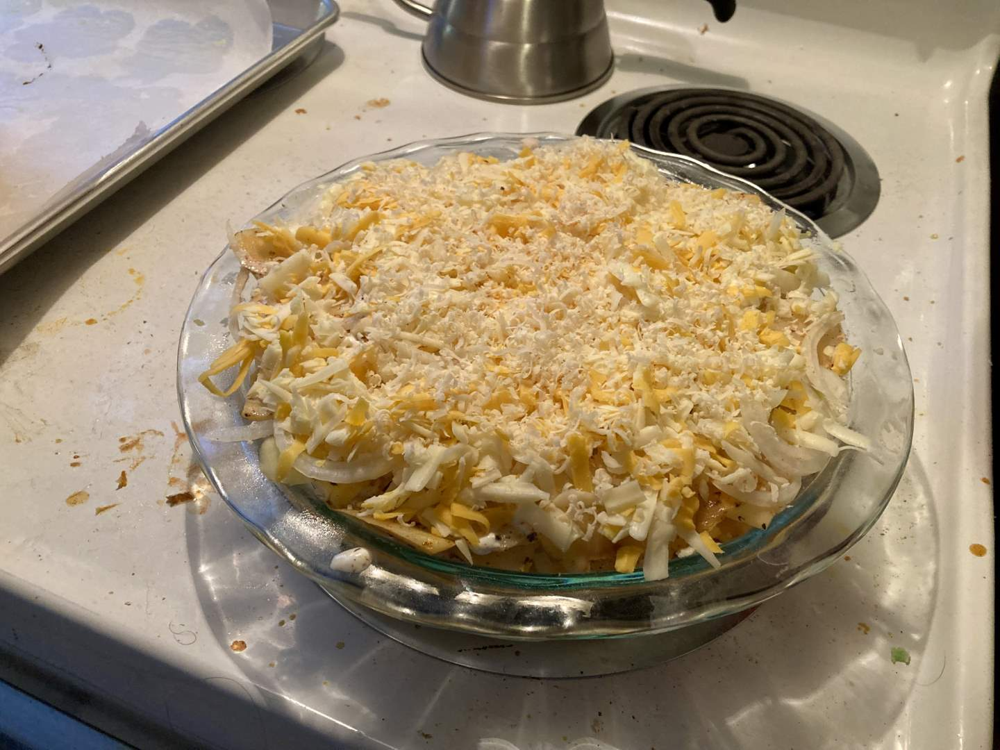
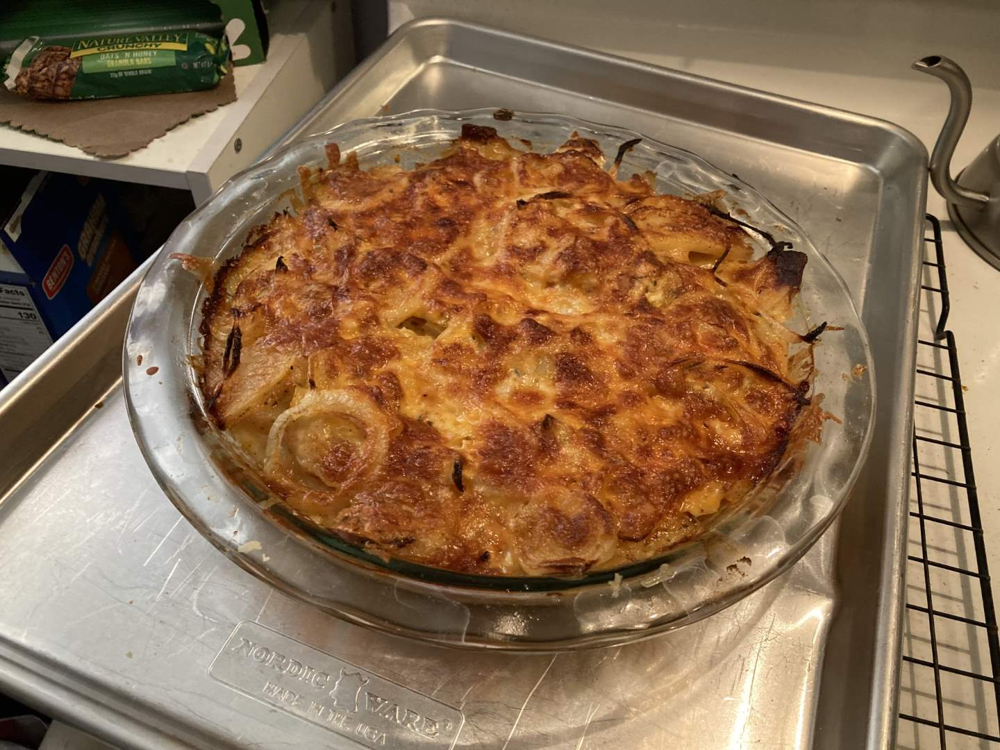
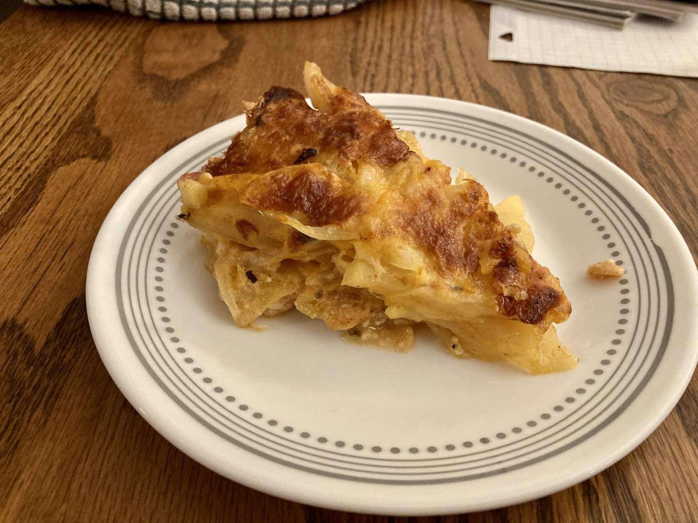

Pie 38: Cheesy Potato
2024-03-16Recipe from Just a Pinch.
Taste:
Difficulty:
Vibes:
Suggested pairing: a rock concert
Back in January when we first made a potato slice pie, my hopes were high. Unfortunately, I followed the recipe exactly and therefore included basically no spices, resulting in a bland slice. This go-around, we found a recipe with ingredients that complemented the beloved but undeniably basic tuber.
Ben and I split the labor for this pie fairly evenly. I washed and peeled the potatoes; he sliced them. I cut the onions and angrily rebuked them for making me cry; Ben arranged the potato slices evenly, seasoning between layers. Finally, after Ben added the onions and more seasoning, he poured spiced milk atop the taters, which I further improved with parmesan cheese.
 Alas, we would have to wait overnight before enjoying this pie. I had to work a rare evening event at my cafe job featuring hair-metal and folk cover bands. Our original plan was to bake and eat the pie after the concert ended, but unfortunately, we did not get home till 9:45 and were not particularly ravenous at such a late hour. The next evening, we baked the pie in three steps: sealed under foil, normal, and broiled. The result was a bubbly filling with melded flavors and a crispy top.
While this pie was undeniably better than the previous potato pie, it by no means claimed the honor of being the best format for eating potatoes. It was yummy, but fries are so much yummier. It was cheesy, but scalloped potatoes are so much cheesier! Being pie-shaped added little to the aesthetic or gustatory dimensions of potato consumption. Frankly, it was a lot of work without being a top-tier potato dish.
 